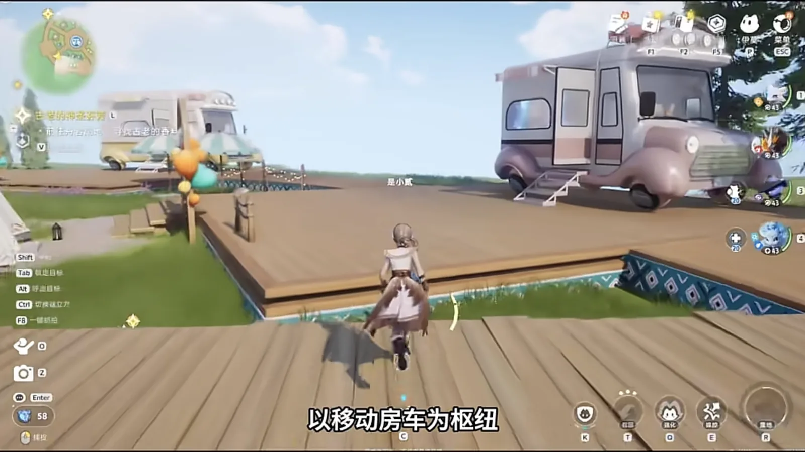
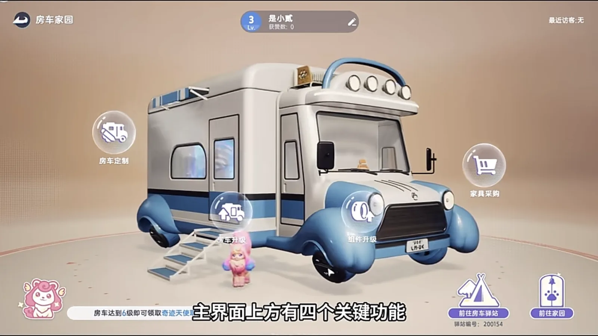
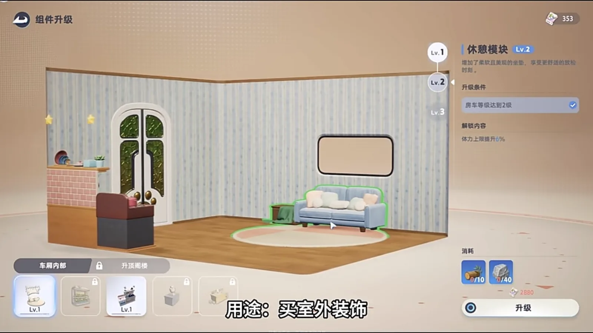
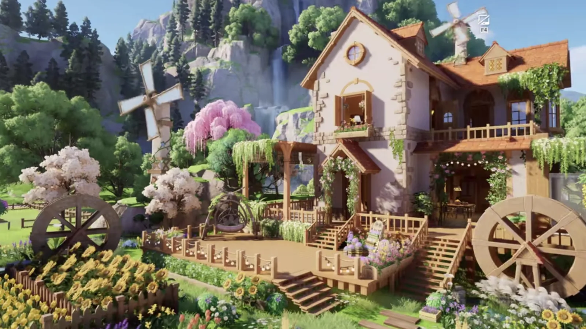

Home首页 / Guides攻略 / Homeland for Beginners: One Moving RV, and Farming Turns Into Money新手家园怎么玩：一辆移动房车，就能把种地和赚钱串成一条线
Checked核对于 October 12, 20262026 年 10 月 12 日
Homeland for Beginners: One Moving RV, and Farming Turns Into Money新手家园怎么玩：一辆移动房车，就能把种地和赚钱串成一条线
How to get the Homeland open and keep it running: where the entrance is, the one tutorial step you cannot skip, what to plant first, how to sort your Aniimo into jobs, and what to do the moment you log in.家园从零开起来：入口在哪儿、哪一步引导不能跳、地里先种什么、伊莫怎么按属性排班，以及每天上线第一件事该做什么。
The Homeland is the least demanding system Aniimo has and the one worth opening early, because it hangs a whole operation off a single moving RV. You grow crops and keep creatures, build and decorate, put your Aniimo to work, and sell what comes out to other players. The loop is four steps — produce, trade, upgrade, decorate — and once those four are turning, neither coins nor experience is a problem again.家园是《伊莫》里最省心的一个系统，也是早期最该开的一个。它用一辆移动房车把整套经营串了起来 —— 你能种地养东西、盖房子搞装修，能让伊莫替你干活，产出的东西还能拿去和其他玩家交易。核心循环只有四步：生产、交易、升值、装饰。这几步转起来，钱和经验基本上就不缺了。
Everything in it pivots on the RV. Get the handful of things below right and the base starts earning whether you are standing in it or not.整个系统以移动房车为枢纽，主打「移动房车加全能生态」。看懂下面几件事，新手也能很快把它跑起来。
Opening it: the entrance, and the step you cannot skip把家园开起来：入口和引导
The world holds four RV Parks, and the RV can be parked at any of them or on any open plot — one interaction and you are inside your own Homeland. The other way in is the RV Homeland icon in the menu down the right-hand side, which opens this screen directly.四个房车驿站散在各地，房车停哪个都行。进自己家有两条路：把房车停在驿站，或者任意一块开放区域，点一下就进家；也可以点右边菜单里的「房车家园」图标，直接进主界面。

Four functions sit across the top of the main screen — RV Customize, RV Upgrade, Component Upgrade and Furniture — and two more buttons wait in the bottom-right corner. Those two are not the same button: one teleports you out to an RV Park in the open world, and the other is the Homeland entrance itself.主界面上方排着四个关键功能 —— 房车定制、房车升级、组件升级、家具采购。右下角还有两个按钮，一个负责传送去大世界的驿站，另一个才是家园入口，别点错。

Unlocking it is part of the main line. What is not optional is the tutorial: run it to its last step. Stop early and your Aniimo will not work on their own, and every efficiency number after that is quietly discounted.解锁跟着主线走就行。但有一件事必须做完整：整个引导要走到最后一步。没做完，伊莫不会自动帮你干活，后面所有效率都要打折。
Wheat first in the fields, the other three in balance地里优先种小麦，其余均衡
Four things are worth stocking and they should not be scattered. Wheat seed is the one to plant — it is free, a great many goods are made from it, and nothing else is asked of it. Give it two to four plots of its own; the seed stock cycles itself, so those plots never run dry.资源优先囤的四样，别乱花。小麦种子是必种的 —— 它免费又好用，很多物资都得靠它，建议专门留 2 到 4 块地来种，无限蓄种也不亏。
Potato, Rice and Sugar cane go in evenly, and what they are for is the daily orders — a plot of each is what keeps a missing resource from stalling your day. Home Coins should not be spent early either: the first round is seeds and self-supply tools only. Leave the decorative pieces alone for now. Decorating is a later game and there is plenty of time for it.土豆、水稻、甘蔗按需均衡种，主要是为了满足每日任务，免得缺资源卡住进度。家园币也别急着花，第一轮基本只买种子和自给工具，那些花里胡哨的非必要装饰先放一放，能省就省 —— 装修这件事，后面有的是机会。
Sort the Aniimo into jobs: Grass sows, Water waters, Rock digs让伊莫分好工：草种、水浇、土挖
Getting the base moving early is one job per element. Grass tills and sows — the farming mainstay. Water waters, and watering speeds growth, which is where the largest block of time gets saved. Rock clears the plots and digs the mines, the heavy work of the base.前期想让伊莫干活快得起飞，就按属性把活分好：草属性伊莫负责耕地播种，是种地的主力；水属性专职浇水，能加快作物成长，省下大量时间；土属性负责清障翻土、开采矿石，是家园里的重活。
Hauling is the exception and it is worth knowing why: carrying goods from a facility to the warehouse is not an element at all but an ability some Aniimo have, so it is a fourth post rather than a fourth colour. Fill it.搬运是唯一的例外，值得说清楚：把东西从设施搬到仓库不是元素能力，而是少数伊莫自带的技能 —— 所以它是第四个岗位，不是第四种颜色。别漏了。
One small trick on top: feeding a worker basic food while it works nudges collection up a little. Top the food up before you log off — hungry Aniimo down tools, and a base full of them produces nothing while you are away.有个小技巧：伊莫干活的时候喂点基础食物，采收效率会小幅提升。下线之前记得把食物补满，不然它们饿着肚子，直接罢工。
Clear the orders first, every day每天先把订单清空
Daily Homeland orders are the fastest route to Home Coins and experience, and the urgent and high-multiplier ones are the whole reason: a high-multiplier order pays 200% to 500% of what the goods are worth.每天的家园订单要清空，尤其是紧急单和高倍单，收益在 200% 到 500% 之间，这是攒家园币和经验最快的路子。
Submit ordinary-quality output and keep the premium pieces back to sell. The priority has exactly one line in it: a high-multiplier order beats a daily order, and a daily order beats a plain sale.提交订单用普通品质的产物就够了，别把超值款浪费在这上面 —— 好东西留着卖更高价。订单的优先级只看一条：高倍订单高于日常订单，日常订单高于普通出售。
Home Coins and Bud Tickets go on different shelves家园币和发芽券，各花各的地方
Home Coins are the general currency and they go a long way: seeds, new plots, farmland and processing-facility upgrades, Homeland bundles, and food for the Aniimo doing the work. Orders are the efficient source, and selling Homeland materials at the Co-op Store is the other one.家园币是通用货币，花的地方很多：买种子、解锁新地块、升级农田和加工设施、买家园礼包、买伊莫的食物，日常消耗全靠它。赚它最高效的方式是家园订单；另一条路是把家园材料卖到 Co-op Store。
Bud Tickets buy decoration and ground, and nothing else: outdoor pieces, and the RV's interior. It is the currency you reach for when you want the place to look like something, and it is not the one that makes it produce.发芽券（Bud Ticket）只管装修和地皮：买室外装饰，升级房车内部装修 —— 想把家园打造成什么风格，靠的就是它。

The mistakes worth not making新手最容易踩的坑
A handful of these cost more than they look like they do.有几个错误千万别犯。
On orders, do not hand over high-quality goods, and do not skip a high-multiplier order to sell the same thing at the plain rate. On resources, Home Coins go into production facilities and seeds before they go into decor, and Voxel Cubes are for core progression — do not burn them on whatever wanders past. On the Aniimo themselves, raise the work stat first; the combat stats do nothing in here. On food, buy the cheap basic kind and keep your Home Coins away from the premium stuff.订单上，别把高品质产物随手交出去，也别跳过高倍单去做低收益的普通出售。资源上，家园币优先投给升值设施和买种子，不提前买高级装饰；谜立方只用在核心养成上，不要随手消耗。伊莫养成上，优先升劳作属性，别去盲目追战斗属性 —— 家园里根本用不着。喂食也一样，挑性价比高的基础食物，别把家园币浪费在高级食物上。
Start in this order上手就按这个顺序来
Follow the main line until the Homeland opens, and take the tutorial all the way to its last step. Plant the fields with Wheat as the floor and the other three by need. Sort the Aniimo into posts — Grass sows, Water waters, Rock digs — and fill the food bar before you log off. From the second day on, the first thing you do is clear the orders, high-multiplier first. Home Coins go back into seeds and facilities; Bud Tickets get saved for the decorating.把顺序捋一遍就清楚了。先跟着主线把家园解开，把引导做到最后一步；然后把地种上，小麦打底，其余几样按需铺开；接着按属性把伊莫排好班，草种水浇土挖，下线前给它们补满食物；每天上线第一件事是清订单，高倍单优先；家园币先买种子、升级设施，发芽券慢慢攒着搞装修。
The whole thing comes down to one line: the Aniimo produce, the orders sell, the Home Coins go back into production, and the decorating waits. Get that loop turning and the base keeps paying you whether you are standing in it or asleep.这套循环的门道就一句话：生产交给伊莫，收益交给订单，家园币投回生产，装修的事留到后面。 把这几步做顺，家园就会一直替你赚钱。
